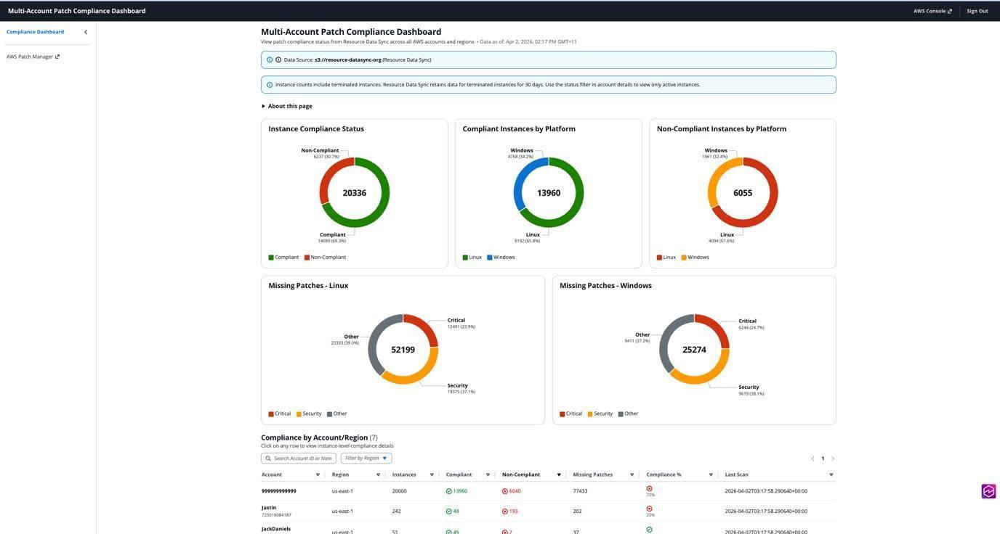

Building a Multi-Account Patch Management Dashboard with Kiro – A Valuable Lesson for an Intern on Specification-Driven Development
As an intern learning alongside senior members of the DevOps team, I have seen firsthand how critical system security is through patch updates (Patch Management) at large enterprises. Our team’s systems span dozens or even hundreds of different AWS accounts. Senior engineers having to check each account one by one to see which servers are still unpatched is truly a manual nightmare.
I came across an article by Justin Thomas: “Build a Multi-Account Patch Compliance Dashboard with Kiro Specs”. At first, I thought it was just another ordinary guide to building a Dashboard with React and Lambda. But after reading it and trying it myself, what I learned most was not a few lines of code, but a systematic development process with absolute security through the Kiro AI tool.
The Real-World Problem: When Systems Scale and Patch Management Becomes a “Nightmare”
As enterprises scale, AWS Systems Manager (SSM) Patch Manager is an excellent tool for automating operating system patching. This data is then pushed to a centralized storage area (Amazon S3) through Resource Data Sync.
However, the challenge is: How do you aggregate and display that massive raw data as a real-time, visual Dashboard? If the system has to scan thousands of files on S3 every time someone opens the Dashboard, costs become extremely expensive and page load times are very slow.
- How do you ensure this internal tool is only for company staff, with absolutely no public endpoint exposed to the internet to avoid hacker attacks?
The Solution: A Serverless Dashboard Combined with Kiro’s Driven-by-Specification Process
What left me speechless was how the author did not jump straight into coding, but used the Kiro AI tool to manage the entire development lifecycle through three phases: Requirements -> Design -> Tasks.
The Dashboard system is built entirely on a Serverless platform with maximum security, following this operational flow:
- Secure Access via SSM Tunnel: Developers who want to view the Dashboard must run an SSM Session Manager command on their local machine to open a secure tunnel (Port Forwarding on port 8443) through a Bastion host directly into the Internal Application Load Balancer (ALB). The system has absolutely no public IP!
- Smooth Cloudscape UI: Requests from the browser through the ALB trigger a Frontend Lambda function to load the React application (using the AWS Cloudscape Design System).
- Smart Two-tier Caching Strategy: Instead of reading raw data directly from S3 Resource Data Sync, a separate compute Lambda function (Cache Lambda) is triggered every 30 minutes by Amazon EventBridge. Its job is to “refine” and aggregate data in advance into lightweight JSON files stored under the
/cache/prefix on the Dashboard’s S3 bucket. - Near-instant Page Load: When selecting an overview or drilling into a specific account, the API Lambda simply reads JSON files from the cache partition. The result is a Dashboard that responds in just a few seconds with near-zero operating cost (you only pay when there is a request).

The Standout Optimization: Project Governance with “Steering Files”
As an intern, I often find ordinary AI chatbots quickly “forget” project context and design standards after a few chat messages. Kiro solved this thoroughly with Steering Files (.kiro/steering/). The author packaged the entire architectural thinking into 5 markdown files:
architecture.md: Clearly specifies the use of an internal ALB and dedicated private subnets.data-schemas.md: Defines the structure of JSON files in the cache.compliance-logic.md: Defines business logic (for example: a server is only considered compliant when the number of missing patches equals 0).frontend-specs.md: Cloudscape UI standards.security.md: Strict security constraints (ALB must use TLS 1.3, S3 must enable SSE-S3 encryption and block public access).
With these files in place, when I instruct Kiro to “Build the dashboard…”, the AI automatically understands and follows 100% of the enterprise security principles without me having to repeat them. Additionally, combining with MCP (Model Context Protocol) servers such as Security Scanner and AWS IaC helps Kiro automatically check CloudFormation source code for AWS security policy violations before delivery.
Real Deployment Experience with “One Click”
After Kiro completed the task list—from writing Lambda code in Python 3.11 to building the React UI—I only needed to ask Kiro to create an automation script:
./deploy.sh deploy patch-dashboard my-resource-datasync-bucket us-east-1
This script handles everything end to end: packaging Lambda, self-signing and loading TLS certificates into ACM for the ALB, configuring Security Groups through the S3 Gateway Endpoint, pushing code to S3, and triggering the first cache run. When the screen printed the aws ssm start-session command instructions, I opened my browser and the patch compliance information across hundreds of accounts appeared visually with pie charts and lists of non-compliant servers.
A Personal Perspective from an Intern
Learning in a Cloud/DevOps environment, I am often overwhelmed by the number of services and complex security configurations. This blog post gave me a valuable lesson: Never rush into coding without a clear specification.
Kiro’s “Driven-by-Specification” approach combined with Steering Files not only accelerates AI-assisted software development, but more importantly forces me (and the AI) to comply with the strictest design and security standards of an Enterprise environment right from the first lines of documentation.
Conclusion
If you are looking for a multi-account system security monitoring solution that is affordable, secure, and fast to load, this Serverless Dashboard architecture is a perfect model. Especially if you want to upgrade your AI workflow from “instant noodles” to “enterprise-grade”, try researching Kiro’s specification-driven development methodology.
Thank you everyone for reading this share from an intern! Is anyone on the team using AI tools to help write IaC templates (CloudFormation/Terraform) safely like this? Please leave your thoughts so I can learn more!

Link to the original article and source code: AWS Blog - Build a Multi-Account Patch Compliance Dashboard with Kiro Specs